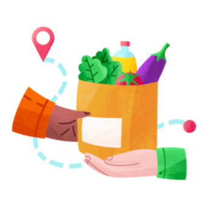

Fome zero e agricultura sustentável
Um dos 17 Objetivos de Desenvolvimento Sustentável (ODS) adotados pelos 195 Estados membros das Nações Unidas
ODS 2
Garantir a segurança alimentar de todo o planeta e respeito ao meio ambiente
Muitas partes do mundo enfrentam recessões brutais, prejudicando o acesso aos alimentos e aumentando ainda mais a inseguranca alimentar
2,37 bilhões de pessoas estão sem alimento ou incapazes de comer um dieta saudável e equilibrada
149,2 milhões de crianças com menos de 5 anos estão desnutridas. O atraso no crescimento já afeta mais de 1 a cada 5 crianças